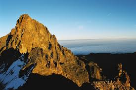

Exploring the Beauty of Kenya's Iconic Peak
Mount Kenya is the second-highest mountain in Africa, standing tall at 5,199 meters. It is located in Kenya and holds great cultural and ecological significance. Designated as a UNESCO World Heritage Site, it is a key tourist attraction and an important natural landmark.
Visitors can enjoy hiking, rock climbing, and exploring the unique flora and fauna. Popular routes for climbing include the Sirimon and Naro Moru trails, which provide breathtaking views of the surrounding landscapes.